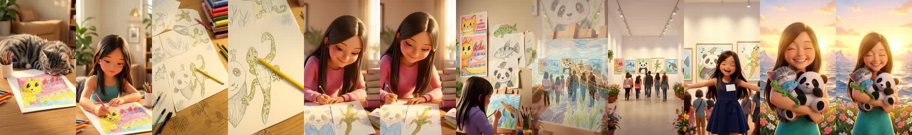
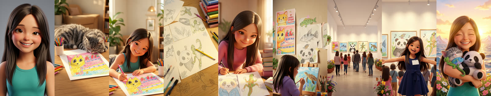
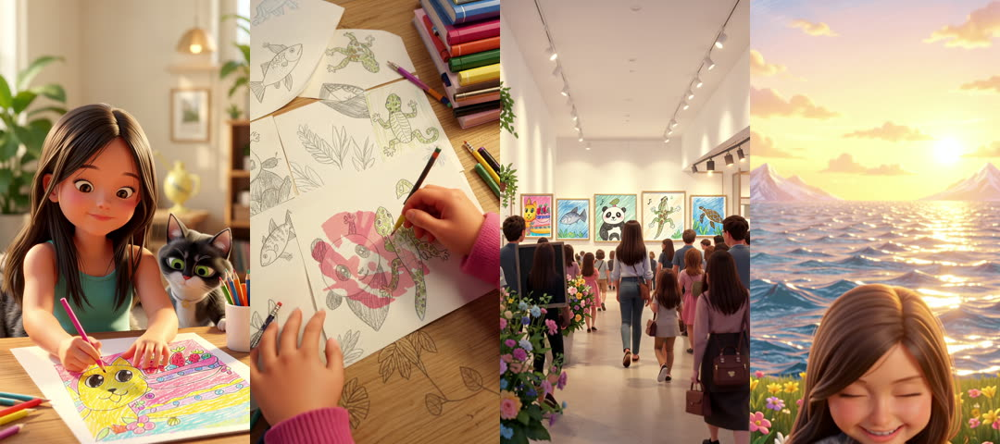
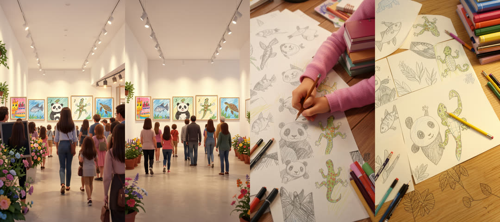

A 60-second vertical 3D-animated short made from Lindsey's 5-panel comic. She draws at the kitchen table, practises every day, finds her own style, holds her first art exhibition, and ends hugging her favourite animals at sunrise. It's the second film through the idea to video blueprint, the first run entirely by scripts/film_run.py from a run-spec, unattended after "go".
Watch: YouTube Short (uploaded 2026-09-23, the 2160×3840 master).
Delivered: raw/clips/lindsey/final/lindsey_art_1080x1920.mp4 (59.96 s, HEVC, 95 MB), lindsey_art_2160x3840.mp4 master (301 MB), lindsey_art_720x1280.mp4 phone preview (23 MB). Music from 0 s with a 2 s fade out; mean −15.8 dB, peak −0.8 dB. Everything ran through scripts/film_run.py from the run-spec.


| Shot | Still | Take | Kept | Notes |
|---|---|---|---|---|
| S1 | edit of S2, seed 1 | v1 | 0–5.4 s | camera drifts and the cat shrinks to a tail after ~f140 |
| S2 | diptych, seed 3 | v3 | 0–6.5 s | v1: grey tabby → black-and-white cat (f124). v2: second cat head + pan (f140). v3: one cat, looks up and smiles |
| S3 | restaged: no hands, pencil lying flat | v3 | 0–9 s | v1 + v2 stills/clips had two hands on the pencil — see below |
| S4 | diptych, seed 2 | v1 | 0–9.96 s | clean for the full clip |
| S5 | diptych, seed 1 | v1 | 0–9.96 s | push-in ends on the turtle canvas |
| S6 | diptych with S7, new still seed 2 | v2 | 0–8.5 s | v1: people walked through dark signboards |
| S7 | diptych, seed 3 | v1 | 0–6.5 s | end fade from f169 (auto-detected) |
| S8 | diptych, seed 2 | v2 | 0–9.3 s | v1: she sank out of frame with the horizon fixed |
13 LTX renders for 8 shots (9 min 20 s – 9 min 29 s each), 24 + 12 still candidates, 8 upscales in 73 min.


qc_sheet.sh now auto-detects the end-of-clip fade (S6 f222, S7 f169, S8 v2 f238).| Question | Answer |
|---|---|
| Who | Lindsey, Kevin's daughter. Consent is his, and her face comes from the comic (no photo) |
| Look | 3D animated feature film: stylised characters in a physically real world, same as Kyle's film |
| Format | 9:16, 60 s, rendered at 576×1024; 2160×3840 master plus 1080×1920 and 720×1280 copies |
| Her artworks | stay flat 2D kid drawings on paper and canvas inside the 3D world. The finale animals are plush toys, as drawn in panel 5 |
| On-screen text | none; pictures and music only |
| Music | "Emotional Children Piano", Music_For_Videos (Pixabay, 1:55) → raw/clips/music/emotional_children_piano.mp3. First 60 s: rises from −23 dB to fullest near 50 s (the exhibition), and its section ends at 60 s. 2 s fade out |
| Overnight | Claude judges. A face shot that keeps failing gets restaged from behind or wide. Allowed to quit the app, run caffeinate and edit scripts. Deliver the film plus this report, commit, push and notify |
Runners-up for the music: "Inspirational Piano Arpeggios" (Music_For_Videos, 1:14, builds then dips), "Leva – Finder Dreams" (lemonmusicstudio, acoustic folk, bright but no build).
| # | Keep | From | First frame | Motion | Face |
|---|---|---|---|---|---|
| S1 | 6.5 s | P1 → S2 | sunlit table: her cat-and-cake drawing, cup of pencils, grey tabby asleep | slow push-in, sunlight flickers, tail flicks | — |
| S2 | 8 s | P1 | Lindsey (teal top) coloring the cat drawing, cat beside her | colors, looks up and smiles | ✔ |
| S3 | 7 s | P2 → S4 | looking down at sketches (fish, panda, gecko), her hand in the pink sleeve shading | hand shades, light drifts | — |
| S4 | 8 s | P2 | Lindsey (pink sweater) sketching a gecko | draws, pauses, smiles at the page | ✔ |
| S5 | 10 s | P3 | from behind (lavender hoodie) painting a sea turtle, her drawings on the wall | brush strokes, push-in to the canvas | back |
| S6 | 8 s | P4 → S7 | gallery wide: framed drawings, visitors walking in | visitors drift in | — |
| S7 | 8 s | P4 | Lindsey (navy dress, name tag) arms open, crowd from behind | laughs, arms stay open | ✔ |
| S8 | 9.6 s | P5 | sunrise by the sea, hugging plush cat, panda, gecko and fish | rocks gently, camera rises | ✔ |
65.1 s kept − 7 × 0.75 s crossfades ≈ 60 s. Her outfit changes by panel, which shows time passing; her face and hair are the identity, locked to the master.
This is the Kyle method (kyle antarctic rescue plan §0, headless cli pipeline §1c):
raw/clips/lindsey/masters/lindsey_front.png.The run-spec is projects.json → lindsey_art["run-spec"]. Commands, in order:
scripts/preflight.sh --fix
scripts/film_run.py lindsey_art stills s2 s4 s5 s7 s8 # then pick
scripts/film_run.py lindsey_art stills s1 s3 s6 # chained from the picks
scripts/film_run.py lindsey_art clips # 8 × ~9.5 min
scripts/film_run.py lindsey_art qc # judge sets take + trim, queues redos
scripts/film_run.py lindsey_art finish